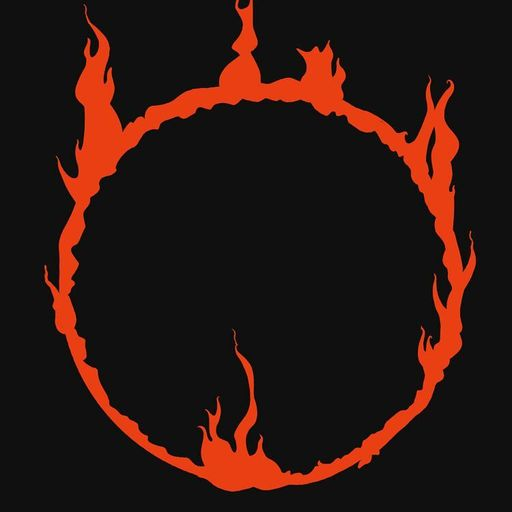
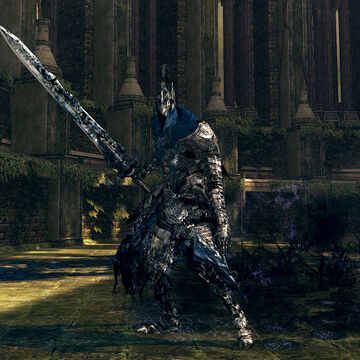

O Cavaleiro Artorias está localizado na área do coliseu de Oolacile Township, no final da Royal Wood.
Sir Artorias, o Abysswalker, era um dos quatro cavaleiros de Lord Gwyn. Ele só faz uma aparição no passado, como ele já é falecido no momento em que o Undead elegido escapa do Undead Asylum.
Cavaleiro Artorias usava armadura distintiva, bem como o Anel do Lobo, e brandiu sua Grande Espada e o Greatshield . Ele é conhecido por ter sido um amigo de Alvina da aliança do Caçador Florestal, e Sif, o Grande Lobo cinzento, era seu companheiro, que agora guarda seu túmulo e mantém o Anel da aliança de Artorias em sua posse.
Artorias perseguiu os Darkwraiths e conseguiu atravessar o Abismo com o poder de seu anel, que ele obteve depois de fazer uma aliança com os animais de lá. impedindo-o de ser engolido pelo vazio, mas amaldiçoando sua espada no processo. Em reconhecimento de suas ações, ele recebeu um dos tesouros de Anor Londo - um pingente de prata que lhe permitiu repelir as feitiçarias das Trevas.
Quando Oolacile ficou ameaçada pelo Abismo criado por Manus, Artorias e seu companheiro de lobo, Sif, chegaram lá na tentativa de salvar Oolacile e resgatar a princesa Dusk sequestrada. No entanto, os dois ficaram sobrecarregados, e Artorias sacrificou-se para proteger o Sif usando seu Cleansing Greatshield, erigindo uma barreira ao redor do lobo. Engolido pelo Escuro, ele se corrompeu junto com sua espada já maldita. Ele foi posto para descansar pelo morto-vivo escolhido após o encontro no coliseu de Oolacile.
Seu legado como herói durou alguns séculos. Na época de Lothric , havia a Legião dos mortos - vivos de Farron, comumente chamada de Abyss Watchers. Eles participaram do sangue de lobo e diz-se que suas almas estão unidas e são uma com a alma do "mestre de sangue de lobo", provavelmente Artorias. Empunhando grandes espadas inspiradas nele e lutando em estilos ferozes selvagens, a Legião lutou uma verdadeira guerra com a escuridão do abismo que seu mestre tinha lutado antigamente.
Seja quem for, fique longe.
Em breve, eu serei consumido.
Por "Eles", pelo Escuro.
Ugh.
UAAAGH.
Você é forte, humano.
Certamente, seu tipo é mais do que pura obscuridade.
Eu lhe imploro, a propagação do abismo, deve ser interrompida.
*Tosse*
Ah, Sif, ai está você ...
Todos vocês, me perdoem. . .
Pois não aproveitamos nada. HURR UAGHH DUURR DOOORP HUAAAAGHH!!!